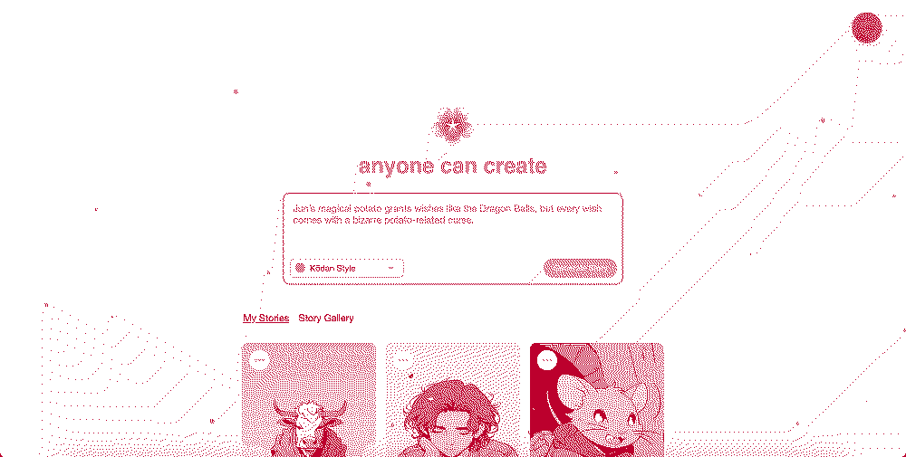
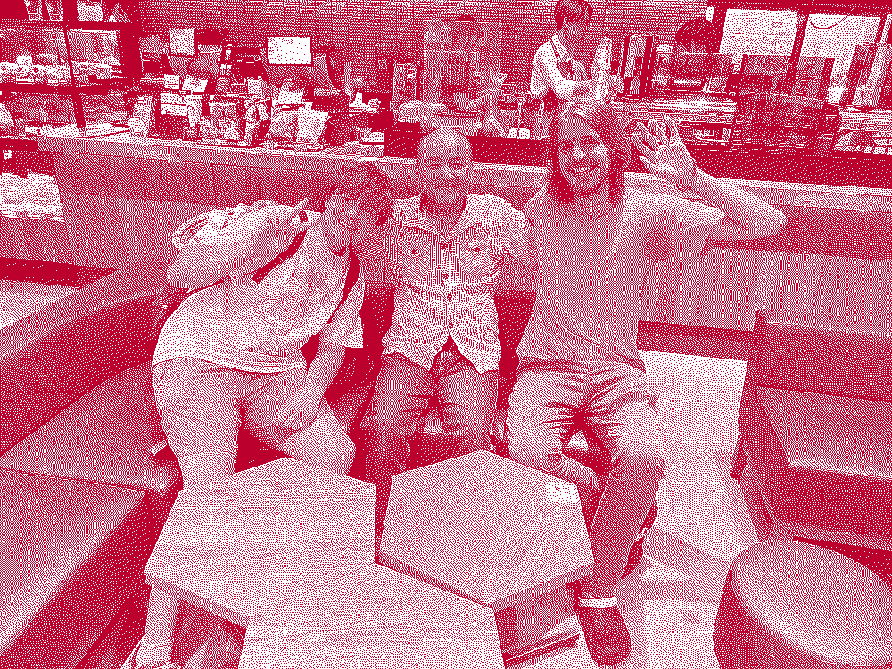
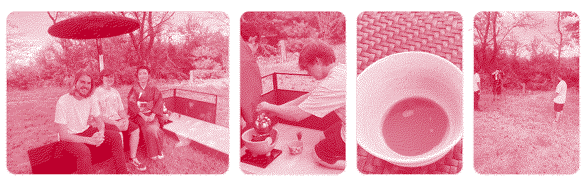

Home / Daily-Starbucks-Mike-&-Website
We decided it was time to bring our "MVP" to the world. We turned Dieter's desktop in South Carolina into our mini-server where users could type a prompt into our website, it would get added to a queue, and then Dieter's desktop in South Carolina would serve that item in the queue and respond with the video they requested.

We built this pretty minimal website that you can visit & it will make Anime for you. Kodan.app

Then... one day at Starbucks, we met a person named Mike! Mike became our first real user.
It turns out Mike was already into making ai-generated stories and had been using Dalle & Power Point. He made children-book style stories about magical pumpkins that learned to fly and travel through different dimensions.
Mike became our most active user, generating more stories than anyone else. He also became a great friend! He showed us around Saitama, showed us a nearby Onsen, and shared many meals with us. He is the closest friend that we made over our time in Japan. One day, he even got a call from the city and the city was asking if he knew any foreigners. He said that he knew two! The city government then said they were looking for foreigners to take photos of to draw in more tourism to the town (not many people visit this area). Mike passed the message on to us, and we said we would love to. So one day, Mike, Dieter, and I spent the day doing traditional Japanese things designed to attract tourists & it was very different from our normal daily-starbucks life haha.
